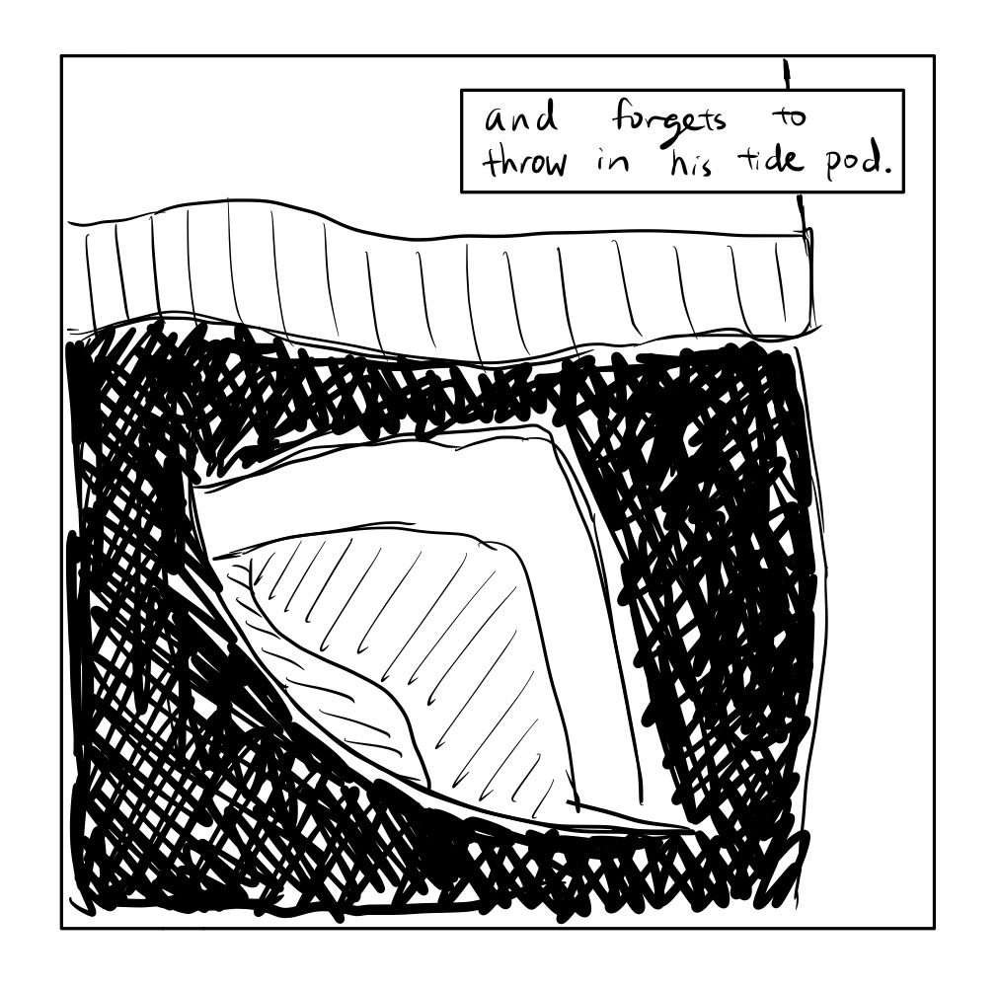

The Brown University Washing Machine
Introduction

Why the washer?
- - It's a public interface shared by all students of a dorm.
- - It contains multiple moving parts, requuiring different types of interactions.
- - It's used differently by each person, depending on their preferences.
- - It's often a source of frustration and time waste for many students.
What's the goal?
- - Identify the core user persona.
- - Discover their engagement with this interface.
- - Pinpoint the struggles of their interaction.
- - Gather information so the washing machine can be improved for its target users.
User Interview Questions and Responses
Students tend to do laundry either once a week or every other week.
Students tend to choose based around their schedule rather than their perception of the laundry room's busyness. Most people choose to do laundry when they have
lots of other work so they can work in their rooms while they wait. Even though they know the busy hours are in the afternoons, they don't weigh this as much as
their own convenience, thereby creating heavy traffic on afternoons.
Students who do their laundry every week usually use 1 washer per laundry. Students who do it every other week usually use 2 per laundry. Other factors that affect laundry
use include their preferences for splitting up their laundry by color, types of clothing, and fullness of each washer.
A large majority of students use tide pods, although there are a few that use liquid detergent.
They usually go down to the laundry room to check on the washers' availability prior to bringing down their laundry. If there are washers available, they would
go back to their rooms to bring down their laundry. Then, they would load their laundry, insert their detergent (if pod then with clothes, if liquid then in tray),
then configures their preferences on the control panel, lastly sets the timer on their phone to match the time displayed on the machine after pressing start.
Everyone found the step of making a separate trip to check on the washers' availability to be the most annoying.
Most students' answers to this question matched their answers to the question asking them to walk through their laundry routine, although some students added
points of confusion on their first time such as where to insert their detergent since the machines lacked instructions on that.
Most students did not provide a specific time which they felt like they struggled significantly with laundry, however, some provided stories where they accidentally
dropped items when loading or unloading the washing machine. One student mentioned that he inserted the tide pod into the liquid detergent tray once when he had to
borrow his roommate's pods after running out of his own detergent.
Key Interface Components

The washing machine consists of the main tub where clothes are loaded into, a slidable tray for liquid detergent, a control console, and in Brown's case, a payment slot which is currently deactivated. Within the detergent tray, there are four compartments, each of a different depth and size. On the control console, there are controls to toggle the soil level, cycle speed, and temperature.
Key Observations
Preparation
- Students do laundry when they also have other work to do so they can maximize waiting time, often on afternoons.
- Students make separate trip to laundry room to check on washer availability prior to bringing down their laundry.
- If none are available, students tend not to go down again for 15-30 min longer than the displayed time-left.
Engagement
- Order of operations: loads washer, insert pod (with clothes) or detergent (in tray), configures preferences, sets timer on personal phone.
- Students using liquid detergent averaged more time in the laundry room than those using pods by having to fiddle with the detergent tray and fill it
- If clothes are left in a completed washer and all others are in use, some students remove them and set them on top of the washer after waiting 5 min.
Personas
Impatient Ian
Impatient Ian is a busy junior taking 5 courses and applying for internships. He has not done his laundry in 2 weeks and is now out of clothes. He must do his wash so he has clothes for his interview tomorrow.
Freshman Fred
Freshman Fred is a freshman doing laundry for the first time on campus. In fact, it is his first time doing laundry ever because his mom did his laundry when he was in high school.
Impatient Ian's Laundry Experience
Ian is a junior at Brown living on campus. He has 3 projects and 2 tests next week as well as 4 interviews, none of which he has prepared for.

The thought of interview reminds him to look for an outfit. When he turns, he sees an empty closet and an overflowing laundry.
Upon realizing, Ian runs downstairs to check on the wahsers' availability.

Only to see that none of the washers are available...
Ian then heads back to his room to wait for 15 minutes before walking back down with his laundry.

Although all the washers are done, no one has come down to remove their clothes yet so all of them are still full.

Out of impatience, Ian removes the other people's clothes and sets them on top of the washing machines so that he can load his laundry.

In his haste, Ian drops a sock while loading his clothes into the washer...

and forgets to throw in his tide pod.

Ian then configures the wash settings to the low option for each, presses the start button, and sets a timer on his phone to what's displayed on the washer.
Ian heads back to his room to keep working while he waits for his alarm to sound, notifying him that his wash is done.

As he goes to unload the washer after his alarm sounded, Ian realizes that he forgot to put in his tide pod and sees the sock he dropped, making his day even worse.